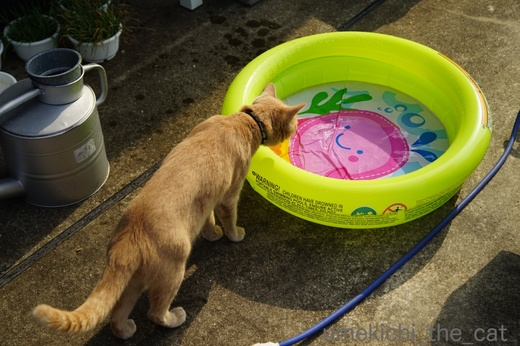
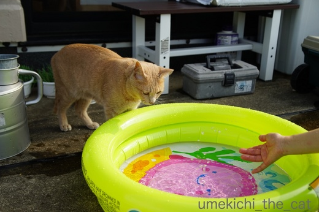
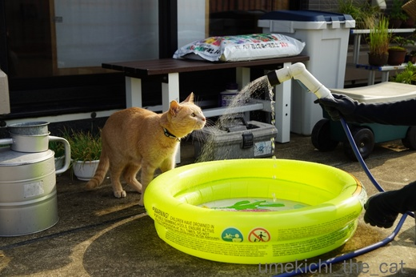
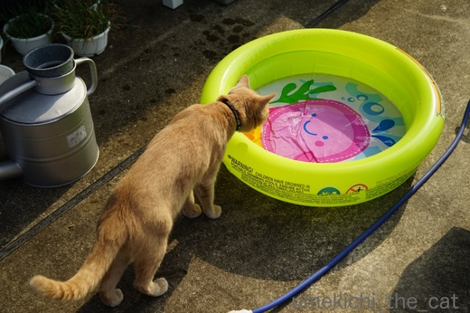
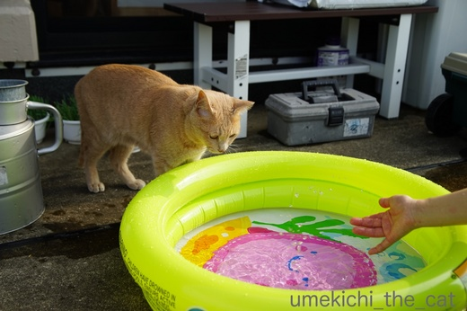
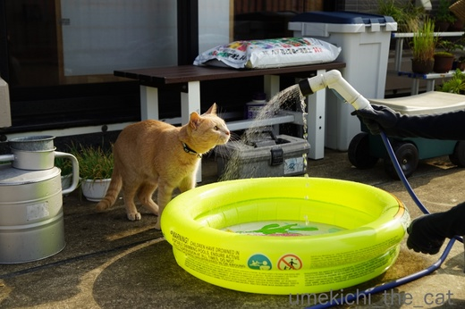

プールデビュー [梅吉]
梅吉さんにも水辺で涼をとってもらいましょう！とプールを買ってみました。

お水を入れてピンポン球を浮かべてみると

及び腰ならが早速やってくるカフェオレ色。

まずお水を味わって

![[猫]](https://blog.ss-blog.jp/_images_e/101.gif) ん？あれはなんや
ん？あれはなんや

出ました！これが私を籠絡した鼻チューです![[黒ハート]](https://blog.ss-blog.jp/_images_e/136.gif)

ほ〜ら、パシャパシャですよ〜。

え〜〜！まさかもう興味なし！？

じゃあ、これでどうだ！

うめきちぱんち いくでーっ
思ったほどのアクティブさはありませんでしたが
少しはお水遊びを楽しんでくれた様です。次はプールにinしてみようっと。
陽の陰った時間にベランダに出ましたがそれでもとんでもなく暑い。
ゆっくり遊びたいものの10〜15分くらいが限界です。
ひともにゃんこも熱中症になったら大変なので早々に切り上げたベランダ遊びでした。
 ↑ガブッと一押し↑
↑ガブッと一押し↑
連日蒸し暑い日が続いております。
エアコンの冷気の中で眠るなんて無理だよね〜と思っていた我が家ですが
暑さが一層こたえるお年頃になってきたのかしんどくなり
とうとう寝室にエアコンを設置しました。
つけて寝てみると、あら快適♡（設定温度は29℃）
天然の涼しさにはかないませんが以前よりは快眠できる様になりました。
もっと早く設置すればよかったー。
お水遊びの後は壁走りポーズで肉球を冷やしますww
そうかと思えばマットレスとベッドパットの間にin！もぞもぞしてしばらく出てきませんでした。
そこはとっても暑いと思うのですが・・・・・
暑さ厳しい折、みなさまご自愛くださいませ。

お水を入れてピンポン球を浮かべてみると

及び腰ならが早速やってくるカフェオレ色。

まずお水を味わって


出ました！これが私を籠絡した鼻チューです

ほ〜ら、パシャパシャですよ〜。

え〜〜！まさかもう興味なし！？

じゃあ、これでどうだ！

思ったほどのアクティブさはありませんでしたが
少しはお水遊びを楽しんでくれた様です。次はプールにinしてみようっと。
陽の陰った時間にベランダに出ましたがそれでもとんでもなく暑い。
ゆっくり遊びたいものの10〜15分くらいが限界です。
ひともにゃんこも熱中症になったら大変なので早々に切り上げたベランダ遊びでした。
連日蒸し暑い日が続いております。
エアコンの冷気の中で眠るなんて無理だよね〜と思っていた我が家ですが
暑さが一層こたえるお年頃になってきたのかしんどくなり
とうとう寝室にエアコンを設置しました。
つけて寝てみると、あら快適♡（設定温度は29℃）
天然の涼しさにはかないませんが以前よりは快眠できる様になりました。
もっと早く設置すればよかったー。
お水遊びの後は壁走りポーズで肉球を冷やしますww
そうかと思えばマットレスとベッドパットの間にin！もぞもぞしてしばらく出てきませんでした。
そこはとっても暑いと思うのですが・・・・・
暑さ厳しい折、みなさまご自愛くださいませ。

カフェオレ色の梅吉

梅吉 2023年8月10日 永眠


梅吉と出会った譲渡会

犬猫の理由なき殺処分ゼロ
妄想広告
UMEKICHI 光

爆発的に早い！
時々攻撃的！
Thanks to Mr.Boss365
爆発的に早い！
時々攻撃的！
Thanks to Mr.Boss365

ニャンコは水が苦手ですね！
次回はプールで遊んでくれると良いですね(^^)
by ma2ma2 (2017-07-31 11:57)
にゃんこは水があまり好きじゃないと聞きますが、
梅吉さん、シャワーには猫パンチして遊ぶんですねぇ(^O^)
うちも流れる水には興味あるみたいで洗面台やキッチンを水浸しにしてくれます^^;
梅吉さんがプールにＩＮ出来たら、次はお母さんと一緒にプール遊び出来るかも(^-^)
by ニッキー (2017-07-31 12:16)
梅吉さん！鼻チュー(*^_^*)
お水を猫パンチ？？
ちょいちょいと遊んでくれたのですね♪
次回はプールにＩＮ？？
楽しみです！
必死の形相の梅吉さんが見れるかな？？
by きぃ (2017-07-31 12:26)
梅吉さんったら、果敢にも水パンチ！
すごい、凄いぞーーー！！
我が家だったら、目を三角にして激オコ・シャーーーーッ！！
プールに爪立てて、一気に切り裂くと思われます……。
梅吉さん、フトコロの大きな漢だわ♡
ところで、エアコンはホントにありがたいものですよね。
歳を重ねるにつれ、設定温度はＵＰし、今は30℃になりました（苦笑）
by morichan (2017-07-31 13:39)
濡れるの嫌いなはずなのに水遊びは好きですよね(*^-^*)
梅吉さん、プライベートブールがあるなんてリッチだにゃ♪
岩合さんの世界ねこ歩きの沖縄編で、海を泳ぐ猫を見ました。
梅吉さんも猫かきできるかな？？？？？
え～っ！大阪の夏をエアコンなしで過ごしていた？！
汗もだらけになりませんでしたか？^^;
by ゆきち (2017-07-31 13:42)
水嫌いなねこさん多そうですが梅吉ちゃんは大丈夫なんですね
by みぃにゃん (2017-07-31 15:12)
シャワーの水の方が興味があったかな？(笑)
お風呂掃除してるとき、シャワーを勢いよく出して壁とかにかけてると
「ていていてい！！！」って戦いを挑んでますｗ
うめきちぱんちも可愛いし、壁走りポーズ最高！！w
by リュカ (2017-07-31 15:49)
にゃんこに丁度いい大きさの可愛いプールですね＾＾
ベランダ広いですねぇ～梅吉さん楽しそう♪
私が日本に住んでいたころは32℃位でニュースになっていました。
今は10~15分で息苦しくなるほどの暑さなんですね。
今日本に帰ったら、私もちくわも気絶しそうですね(^^;
by Moon (2017-07-31 17:02)
ああ 我が子の喜ぶ姿が見たい 親心 愛猫ですねぇ
ビニールに爪プツンとか・・・・
by テオ (2017-07-31 17:41)
梅吉さんにぴったりな大きさの可愛いプール! シャワーを怖がらないでパンチはえら~い。温泉につかるような感じで中でまったりしてるところが見たいです。
by zombiekong (2017-07-31 18:36)
ma2ma2さん＞梅吉は自分がシャンプーされるのは嫌いなんですが
お水遊びは大好きなんですよ〜(≧艸≦)
次回はもっと大胆に遊んでくれるといいな♪
ニッキーさん＞手足が濡れるのはまったく嫌がらないのですよ。
湯飲みに手を突っ込むし、足が濡れていると滑って面白い！と
わざわざ足を濡らしに行く梅吉ですから(≧▽≦)
一緒にプールも良いですね！さらに進んで一緒に湯船に浸かるのが目標です(๑˃̵ᴗ˂̵)و
きぃさん＞初披露の鼻チューです。二人だけの思い出だったのに(*>艸<)
プールは夏の遊びのはずですがあまりに暑くて・・・・・
梅吉がプールにinするのは秋口になるかもしれません^^;
morichanさん＞梅吉はプールに「がぶ〜」っとしてあっという間に
使えなくするんじゃないか・・・と思っていました^^;
半分それを期待していたのも事実ですっwwちと残念。
意外にもマイルドに遊んでくれて、大人になったね！梅吉〜と（涙・・・
エアコンは本当に付けてよかったです。
早くも「我が家の2017年重大ニュース」の上位に
ランクインしそうな出来事です＾＾
ゆきちさん＞数々の不動産に加えてプライベートプール。
ますます「ふごー」になってきた梅吉です(≧▽≦)
子供の頃よくお風呂の残り湯に落ちていたのですが
必死に手足をバタバタしていましたよ。泳ぐ、イケるかもしれませんww
大阪に住み始めてから夏になると手足の皮膚の柔らかいところが
必ずどこか赤くなって痒いです。
それがちょっとでも減るかな、と寝室のエアコンに期待しています（・∀・）ﾉ
みぃにゃんさん＞梅吉は水が得意なんですよ〜。
シャンプーは苦手なんですけどね(≧艸≦)
リュカさん＞溜まった水はイマイチ興味がなかった様です。
お風呂掃除のシャワーにも絡んできますよね！
あとシンクを流れてゆくお水。動く水は生き物の様に見えるのかな？
壁走りポーズのままずるずると移動して行くこともあるよーww
Moonさん＞我が家のベランダは無駄に広いの。
滑り台とかついている大きなプールも置けたんだけど
がじって「ぷす〜〜〜っ」となる危険もあったので止めましたわww
大阪の体感気温は連日35℃を超えているんじゃないかと思います(＠◇＠)
加えて湿気！夏に日本に帰って来る時はお覚悟を！！
テオさん＞思った様な反応ではありませんでしたが
ガン無視されずに良かったです＾＾
爪プツン、お口でガブ〜っ どちらもあり得る話ですww
zombiekongさん＞さすがに100均にはプールはありませんでした。
で、生まれて初めて「トイザらス」に足を踏み入れて
この「ベビープール」を買ってきましたよ＾＾
蛇口をひねるともうお水ではなくぬるま湯が出てくるので
温泉気分も味わえそうです(≧▽≦)
by ちぃ (2017-07-31 18:53)
え～猿のように湯船に浸かる梅吉さん？見てみたい…
by yamachan (2017-07-31 19:37)
水の上をスイスイ行くおもちゃとかダメかな？
先住さんはお風呂に入って来ていましたが、
湯船にタオルで作った風船を沈めてぶくぶく〜っていうのに
興味津々でした(^^)
ゆづはお風呂には全く興味無しです〜(-_-;
by も〜 (2017-07-31 19:42)
うちの猫は、洗面台のすぐ下で寝るんですが、私が顔を洗った時に垂れた一滴の水で逃げていきます。
だから、梅吉さん、只者ではないと思います。
by riverwalk (2017-07-31 20:20)
私は幼稚園から高校生までニャンコと生活を共にした経験がありますが、
プールだけは発想しませんでした。(^^;
先生、お付き合いですよ！
by KENT0mg (2017-07-31 21:20)
おお、梅吉さんプールに興味深々ですね！
うちのは基本、水につかるのは嫌いなのですが
この時期、風呂場のぬれた床に横たわっているときがあります。^^;
少しの水の量なら行けるかも知れません。
by yes_hama (2017-07-31 21:26)
可愛いプライベートプール、梅吉さんはヤッパリ、リッチですね。
（笑）シャワーのように丁度良い高さに取り付けているかと思っていました。
よ〜く見ると、ちぃさんの手？手袋の手（笑）
声を出して笑ってしまいました（自分のアホさにですよ）
by kiki (2017-07-31 21:45)
うちの子は濡れタオルも嫌がりますから
こういう遊びは無理でしょうね＾＾；
by ぽちの輔 (2017-08-01 06:39)
さすが猫ちゃんです!
瞬時に動く物には反応してしまいますね。
可愛いです(^_^)
by kou (2017-08-01 07:47)
梅吉くん！プールデビュー♪
さすがにプールの中までは無理でしたか～。
膨らましたり、お水溜めるのにも意外と時間が掛かるのにね＞＜
家もひなたちの水遊びの為にプールがあるけど
全然出しません。喜ばないの・・・( ；∀；)
梅吉くんは、プールサイドに置いたベッドみたいなのが似合うかもよ！
横になって麦わらをおでこに置いて日差しをよけちゃったり。
妄想し過ぎたｗ
by emi (2017-08-01 14:18)
あんら～プール買ってもらうにゃんこって( ≧∇≦)ﾆｬﾊﾊ!
王子様なのねー♪
しかも、お水を怖がらない純粋な好奇心！かわいいな～。
by Ginger (2017-08-01 18:18)
梅吉君プール買ってもらったのね！梅吉君が遊ばなくてもちぃさんご夫婦で足つけたり、水鉄砲でキャッキャやるってのもアリかもよ！きっと梅吉君、どんびきね( ウフ
梅吉君の壁走りもすごいわぁ！すいとんの術に、壁走り、挙げ句はシーツの裏に潜んで、忍者修行は完璧ね！でもちぃさん、梅吉忍者が心配で、実戦にはだせないわね…
by BillK-ko (2017-08-01 18:30)
梅吉くんは、やっぱり動く（流れる）水が好きなのでしょうか＾＾
プールの絵がかわいいな。
by ふにゃいの (2017-08-01 22:41)
yamachanさん＞バックが雪景色だったらサイコーなんですけどね(≧艸≦)
も〜さん＞タオル風船ぶくぶく〜は梅吉も興味津々です・・・・
怪訝な顔といっても良いかもしれません。
なぜか「おかーさんじゃないよー」と言い訳しちゃいます (^▽^;)
riverwalkさん＞シャワーを体にかけるとさすがに嫌がりますが
水滴程度なら全く平気な梅吉です。
砂漠に住む「スナネコ」さんがいますが梅吉の先祖は
水辺に住む「ミズネコ」かもしれません(≧艸≦)
KENT0mgさん＞ニャンコ歴がお有りなのですね！
ヒトでもニャンコでもワンコでも一緒に暮らしている限り
「付き合い」は大切ですよね！
梅吉はなかなか解っている方だと思います〜(≧▽≦)
yes_hamaさん＞アズ氏、ちょっぴり濡れると涼しいのかもしれませんね〜＾＾
暑い夏の対象法、心得ていらっしゃる！！
kikiさん＞我が家、梅吉ばかりがリッチです(^▽^;)
日焼けが嫌なので完全防備でベランダに出ましたよ。
写真で見ると手袋の手しか写っていないので何やらわかりませんよね。
黒子に徹した優秀な下僕でした(^_－)☆
ぽちの輔さん＞徹底的にお水が嫌な正しい猫さんですね。
我が家の梅吉はどういう生き物なんだろう・・・・・
kouさん＞お水は動くものと思っている様で
自分の水飲みボールにも手を突っ込んで
バシャバシャしている時があるんですよ〜^^;
ほらほら動け！みたいなww
emiさん＞もしかしたらじゃぶじゃぶと・・・と淡い期待があったのですが
ダメでした〜(^▽^;)期待しすぎww
ひなちゃん、まりもちゃんもプライベートプールをお持ちなのね。
わんちゃんは喜んで遊んでくれそうだけどお水嫌いな子ちゃんでしたか。
麦わら帽子持参のプール、今度やってみる！(≧艸≦)
Gingerさん＞不動産王なのでプラベートプールくらい持っていないと！
と購入致しました(≧艸≦)
お水は怖がらないんですがビニールプールに空気を出し入れする音が苦手で
しっぽをびょ〜んと上げて逃げていきますよ。それも可愛い・・・・・(〃ω〃)
BillK-koさん＞ああ、プールできゃっきゃするアホ夫婦を見る
梅吉の冷めた目つきが目に浮かびます・・というか多分ガン無視で
寝ていると思われます(^▽^;)
ギャラリーいないとつまんないなー（そうじゃない
忍猫梅吉は技も多彩だし戦闘能力もありそうだけど
必ずおかーさんが一緒に実戦に向かうのでジャマな忍猫かも(≧艸≦)
ふにゃいのさん＞流れる水が好きなんだからプールは無くても・・・・・
という疑問はお持ちにならないでくださいね^^;
by ちぃ (2017-08-02 12:15)
Boss365様に先を越されたﾋｨｨｨｨｨ(ﾟﾛﾟ;ﾉ)ﾉ
はじドラ様化しつつあるな((；ﾟДﾟ)ﾋｨｨｨ!
by middrinn (2018-06-15 07:47)
middrinnさん＞Boss365さんにはすももさんの水着のお話の時に
お知らせしていたのですよー＾＾
梅雨の晴れ間の時にでもまたプール遊びしようかしら・・・
by ちぃ (2018-06-15 20:15)